UDN
Search public documentation:
ShapeEditorKR
English Translation
日本語訳
Interested in the Unreal Engine?
Visit the Unreal Technology site.
Looking for jobs and company info?
Check out the Epic games site.
Questions about support via UDN?
Contact the UDN Staff
日本語訳
Interested in the Unreal Engine?
Visit the Unreal Technology site.
Looking for jobs and company info?
Check out the Epic games site.
Questions about support via UDN?
Contact the UDN Staff
2D 도형 편집기
문서 요약: Shape Editor 도구 사용 방법에 대한 참조 문서 변경 내역: 마지막 업데이트: Jason Lentz (DemiurgeStudios?). 2110 빌드에 대한 업데이트. 원저자: Tomasz Jachimczak (UdnStaff).개요
2D Shape Editor 를 사용하여 일반적인 primitive 브러시 작성기를 사용하는 것보다 훨씬 더 복잡한 도형을 만들 수 있습니다. Shape Editor 의 기능은 매우 유용하고 잘 구현되어 있지만 모델러와 3DMax 조합의 대안으로 사용되는 도구로 설계되지는 않았습니다. 본 문서는 편집기의 모든 기능과 그들을 유효하게 활용하는 방법을 자세히 설명합니다. 우선, 2D Shape Editor 를 열려면 Tools 메뉴를 선택한 다음 2D Shape Editor 를 클릭하십시오. 그러면 편집기 도구가 열리고 다음 이미지가 표시됩니다. 이것이 기본 사각형 도형입니다.
 2D Shape Editor 는 다음과 같이 작동합니다. 이차원의 도형을 만들고 원하는 만큼 많은 수의 가장자리를 주고, 직선 가장자리 또는 bezier 가장자리를 만들고 난 다음 마지막으로 편집기에서 사용될 수 있는 3D 도형을 만들기 위해 돌출과 회전을 줄 수 있습니다.
이 문서가 실제 도형 만들기를 시작하기 전에 일반적으로 알아야 할 용어가 두 세 가지 있습니다. 정점은 도형의 여러 가장자리가 만나는 점입니다. Vertex (정점)의 복수형은 vertices 입니다. 도형의 가장자리는 정점끼리 연결하는 선 같은 것으로 가장자리 세트로 둘러싸인 평평한 공간을 면이라고 합니다.
아래에서 간단한 육면체의 정점, 가장자리, 면이 무엇이가를 보여줍니다.
2D Shape Editor 는 다음과 같이 작동합니다. 이차원의 도형을 만들고 원하는 만큼 많은 수의 가장자리를 주고, 직선 가장자리 또는 bezier 가장자리를 만들고 난 다음 마지막으로 편집기에서 사용될 수 있는 3D 도형을 만들기 위해 돌출과 회전을 줄 수 있습니다.
이 문서가 실제 도형 만들기를 시작하기 전에 일반적으로 알아야 할 용어가 두 세 가지 있습니다. 정점은 도형의 여러 가장자리가 만나는 점입니다. Vertex (정점)의 복수형은 vertices 입니다. 도형의 가장자리는 정점끼리 연결하는 선 같은 것으로 가장자리 세트로 둘러싸인 평평한 공간을 면이라고 합니다.
아래에서 간단한 육면체의 정점, 가장자리, 면이 무엇이가를 보여줍니다.
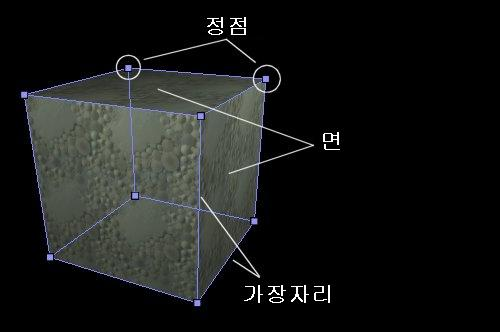
2D Shape Editor 에 이 지식을 적용하면 사용자가 만드는 도형은 브러시의 면이 됩니다(정확한 면은 아직 설정할 필요가 있고 이것은 여러 면들 중 하나가 됩니다). 도형을 감싸는 선은 가장자리가 되고, 도형을 만들기 위해 드래그할 수 있는 작은 상자는 정점이 됩니다. 이 이미지는 2D Shape Editor 에서 3D 브러시의 가장자리와 정점이 될 부분을 보여주고 있습니다.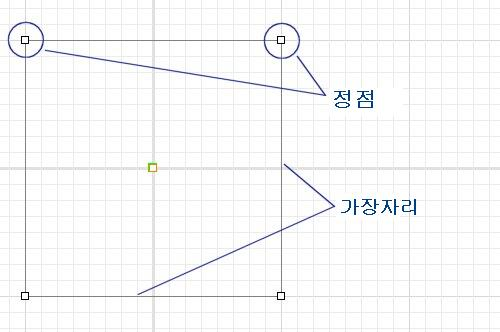
2D Shape Editor 의 버튼
2D Shape Editor 의 위쪽 테두리를 따라 일련의 버튼이 있습니다. 이들은 다양한 기능을 수행하는 단축 버튼입니다. 여기에 있는 모든 기능은 편집기에 있는 일반적인 메뉴를 통해 사용할 수 있지만 버튼을 사용하면 더 빨르게 액세스할 수 있습니다. 특정 버튼에 대한 키보드 단축키가 있는 경우 기능에 대한 설명이 명시됩니다. 버튼은 8 개의 그룹으로 나누어져 있습니다. 표시되는 순서는 다음과 같습니다.New (신규), Open (열기), Save (저장)
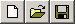
New: 현재 도형은 삭제되고 2D Shape Editor 화면에 새로운 사각형이 배치됩니다. Open: 이전에 저장된 2D 도형은 나중 사용을 위해 열려질 수 있습니다. 기본 디렉터리는 2D Editor 에서 마지막으로 저장을 한 디렉터리 또는 맵 디렉터리입니다. 도형을 열면 현재의 모든 데이터가 손실되고 열린 도형이 2D Shape Editor 에 표시되는 유일한 것이라는 것에 유념하십시오. 이 기능을 실행 취소할 수 없습니다. Save: 나중에 액세스하기 위해 브러시를 저장할 수 있습니다. 브러시를 편집기에서 작업하기 위해 저장할 필요는 없습니다. 일단 브러시가 생성되면 브러시와 저장된 파일 사이에는 어떤 연결도 생성되지 않습니다. 브러시는 완전히 도형과 독립적입니다. 그러나 동일한 2D 도형을 다시 사용하려는 경우 또는 다른 환경에서 다시 사용하려면 도형을 저장하는 것이 좋습니다.도형 회전
수직/수평 뒤집기
Scale Up (확대) / Down (축소)
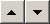
Scale Up: 이 기능을 사용하여 전체 도형의 크기를 최대 100% 까지 확대 시키므로 도형의 크기를 2 배로 만들 수 있습니다. 이렇게 하면 작은 그리드에서 추가 세부 사항을 제작할 수 있습니다. 브러시의 크기를 확대하면 돌출 또는 회전 될 경우 진짜로 큰 크기의 브러시를 만는다는 것에 유의하십시오. 간단하게 표시 줌을 확대하는 것이 아니라 실제 브러시의 크기를 증가시킵니다. Scale Down: 이 버튼을 클릭할 때마다 브러시 크기가 50% 축소됩니다. 브러시를 축소하면 특정 정점이 그리드에서 떨어져 나갈 수 있다는 점에 유의하십시오(한 정점이 원점에서 7 단위 떨어진 지점에 있을 때 브러시를 축소할 경우 정점이 원점에서 3.5 단위의 떨어진 곳에 지점에 위치하게 됩니다).Zoom In (줌인) / Out (줌아웃)
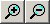
Zoom In: 이 버튼을 클릭하면 작은 도형을 더 선명하게 표시되거나 정점의 정확한 위치 결정을 실시하도록 카메라가 도형에 가깝게 이동합니다. 그러나 도형 확대/축소와 달리 실제 도형 및 도형에서 만들어진 브러시에 영향을 미치지 않습니다. Zoom Out: 이 버튼을 누르면 카메라가 도형에서 멀어집니다. 그러면 큰 영역을 표시할 수 있게 되고 편집할 수 있게 됩니다. 도형 또는 출력되는 브러시에는 실제로 영향을 끼치지 않습니다.Create Vertex (정점 만들기) 및 Delete Vertex (정점 삭제하기)
Make Linear (선형 변환) 및 Make Bezier (Bezier 곡선 만들기)
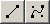
Make Linear: 이 기능을 사용하면 활성 세그먼트가 직선 가장자리로 변환됩니다. 현재 가장자리가 이미 직선의 경우 아무 효과가없습니다. Bezier 곡선 세그먼트가 직선으로 변경되면 핸들의 위치가 분실되고 이 작업을 실행 취소할 수 없다는 점에 유의하십시오. 이는 즉 실수로 bezier 부분을 선형 세그먼트로 변환시켰을 경우, 그 곡선을 다시 만들어야 한다는 것을 의미합니다. Make Bezier: 이 버튼을 클릭하면 활성 세그먼트가 bezier 곡선으로 변경되므로 bezier 핸들을 사용하여 매끄러운 곡선을 만들 수 있습니다. 새로운 곡선을 만들 때 세그먼터 상세에 사용되는 마지막 설정입니다. 그러나 언제나 곡선 데이터의 손실없이 쉽게 설정을 변경할 수 있습니다.브러시 만들기
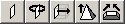
Create Sheet Brush (시트 브러시 제작): 이 도구를 사용하여 도형에서 시트 브러시를 만듭니다. 자세한 내용은 아래에서 설명합니다. Rotate Shape to Create Brush (도형을 회전시켜 브러시 만들기): 이 버튼을 클릭하면 편집기에서 도형을 회전시켜 브러시를 만듭니다. 자세한 내용은 아래에서 설명합니다. Extrude Shape to Create Brush (도형을 돌출시켜 브러시 만들기): 이 버튼을 클릭하면 현재의 도형을 돌출시켜 브러시를 만듭니다. 자세한 내용은 아래에서 설명합니다. Extrude Shape to Point to Create Brush (도형을 지점으로 돌출시켜 브러시 만들기): 이 버튼을 클릭하면 편집기에서 도형을 한 지점으로 돌출시켜 브러시를 만듭니다. 자세한 내용은 아래에서 설명합니다. Extrude to Beveled Point to Create Brush (경사 지점으로 돌출시켜 브러시 만들기): 이 버튼을 누르면 도형을 한 지점으로 돌출시키지만 그 지점에 도달하기 전에 경사가 생깁니다. 자세한 내용은 아래에서 설명합니다.배경 이미지
Shape Editor 의 배경은 어떤 비트맵 파일로 설정될 수 있습니다(특정 텍스처를 따라 브러시를 만들 때 유용합니다). 배경 이미지를 사용에는 2 개의 옵션이 있습니다. 첫 번째는 "Open From Disk (디스크에서 열기)"이고 아주 잘 작동합니다. 이 옵션을 선택하여 이미지를 열고 Shape Editor 의 배경으로 배치시킵니다. 사용되는 스케일은 1 그리드 크기당 1 픽셀입니다. 두 번째 옵션은 "Get From Current Texture (현재 텍스처에서 가져오기)"이지만, 편집기에 충돌을 유발시켜(현재 빌드 829 에서 발생) 그 사용을 권장하지 않습니다. 배경 이미지로 비트맵 (.bmp) 파일만이 지원된다는 점에 유의하십시오.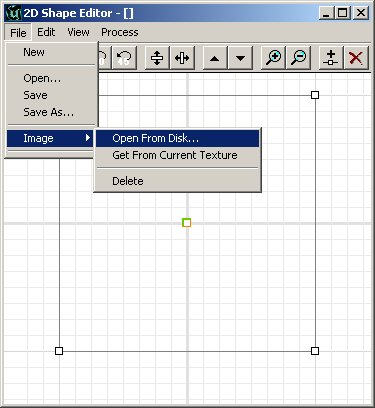
배경 이미지는 타일되지 않습니다. 또한, 그리드가 그림 주위에 표시됩니다.
도형 제작
정점 제작 및 삭제
이제 이 도구를 사용하여 실제 작업에 해 봅시다. 원하는 도형을 만들기 위해 정점을 이리저리 이동시킬 수 있습니다. 정점을 움직이려면 해당 정점에 마우스 왼쪽 버튼으로 클릭한 상태에서 원하는 위치로 드래그하십시오. 정점을 클릭하자마자 바로 그 정점이 빨간색으로 바뀌고 가장자리의 1 개가 진하게 된 것을 알게 되실 것입니다. 이러한 것은 현재 작업하고 있는 정점 및 가장자리입니다. 활성 정점을 이동시키면 동시에 따라 움직이는 1 개의 자유롭게 떠있는 정점이 있습니다. 이것은 나중에 제작할 브러시의 선회축입니다. 이에 대해서는 나중에 더 자세히 설명하겠습니다.
도형에 정점을 추가하려면 "Split Segment (세그먼트 분할)" 버튼을 클릭하거나 단축키 CTRL I 를 눌러주십시오. 이 기능을 사용하면 현재의 가장자리의 중앙에 새로운 정점을 배치시킬 수 있습니다. 새로운 정점이 추가된 직후 다른 정점과 마찬가지로 이동될 수 있습니다.
활성 정점을 이동시키면 동시에 따라 움직이는 1 개의 자유롭게 떠있는 정점이 있습니다. 이것은 나중에 제작할 브러시의 선회축입니다. 이에 대해서는 나중에 더 자세히 설명하겠습니다.
도형에 정점을 추가하려면 "Split Segment (세그먼트 분할)" 버튼을 클릭하거나 단축키 CTRL I 를 눌러주십시오. 이 기능을 사용하면 현재의 가장자리의 중앙에 새로운 정점을 배치시킬 수 있습니다. 새로운 정점이 추가된 직후 다른 정점과 마찬가지로 이동될 수 있습니다.
 도형에서 정점을 삭제할 수 있고 그 주위의 2 개의 정점은 새로운 가장자리로 서로 연결됩니다. 정점을 제거하기 위한 단축키는 Del 키입니다.
도형에서 정점을 삭제할 수 있고 그 주위의 2 개의 정점은 새로운 가장자리로 서로 연결됩니다. 정점을 제거하기 위한 단축키는 Del 키입니다.
Bezier 및 선형 가장자리
도형 편집기는 2 종류의 가장자리를 지원합니다. 지금까지 본 문서에서 사용해 온 직선을 지원할 뿐만 아니라 bezier 곡선을 지원합니다. 베지어 곡선으로 더 매끄러운 효과를 얻을 수 있으며 곡선이 더 빠르게 만들어집니다. 도형에 베지어 가장자리를 만들려면 bezier segment 버튼을 클릭하거나 Edit>Segment>Bezier 를 선택하십시오. 2 개의 파란색 핸들이 가장자리에 추가되어 나타납니다. 이 핸들을 움직이면 핸들 사이의 가장자리가 가능한 한 매끄러운 라인을 형성하기 위해 유연성을 보입니다. 정점에서 멀리 떨어진 핸들을 드래그할수록 베지어 곡선 세그먼트에 더 많은 힘이 들어가게 됩니다. 핸들의 끝은 선을 드래그되는 부분입니다. 말로 자세히 설명하는 것보다 실체 몇 초 동안 사용해 보면 바로 이해할 수 있습니다. Bezier 가장자리의 제공하는 추가 기능은 자세한 정도를 변경할 수 있는 능력입니다. 이 세그먼트에는 3 세트의 세부 레벨이 갖추어져 있습니다. 이는 즉, 가장자리에 3 개의 하위 세그먼트가 있다는 것입니다.
Bezier 가장자리의 제공하는 추가 기능은 자세한 정도를 변경할 수 있는 능력입니다. 이 세그먼트에는 3 세트의 세부 레벨이 갖추어져 있습니다. 이는 즉, 가장자리에 3 개의 하위 세그먼트가 있다는 것입니다.
 이것은 동일한 세그먼트이지만 (세그먼트 세부 사항 이외에는 아무 변경 없이) 세그먼트의 세부 레벨을 10 으로 설정됩니다. 가장자리가 부드럽게 된 것이 즉시 알게 될 것입니다. 세부 레벨을 변경하면 현재 사용중인 가장자리에만 그 영향이 미친다는 것에 유의하십시오. 다른 세부 레벨을 가진 가장자리를 만들 수 있습니다. 프레임 속도에 미치는 영향을 고려하여 사용하는 정점의 수를 최대한 제한합니다.
이것은 동일한 세그먼트이지만 (세그먼트 세부 사항 이외에는 아무 변경 없이) 세그먼트의 세부 레벨을 10 으로 설정됩니다. 가장자리가 부드럽게 된 것이 즉시 알게 될 것입니다. 세부 레벨을 변경하면 현재 사용중인 가장자리에만 그 영향이 미친다는 것에 유의하십시오. 다른 세부 레벨을 가진 가장자리를 만들 수 있습니다. 프레임 속도에 미치는 영향을 고려하여 사용하는 정점의 수를 최대한 제한합니다.

도형 회전 및 미러링
깨끗한 도형으로 다시 시작합니다 ("New" 버튼을 클릭하거나 File>new 를 선택). 이제 다시 작업할 수 있는 간단한 사각형 도형이 표시됩니다. 몇개의 정점을 이동시켜 다른 도형을 만든 다음 연습을 위해 두세 개의 정점을 추가하여 본 문서에서 변경하고 수정할 또 다른 모습의 도형을 만듭니다. 실수로 잘못된 방향을 바라보도록 만들었습니다(다른 기능을 설명하는 위한 서투른 변명입니다). 도형이 다른 방향으로 향하도록 수동으로 각 정점을 이동시킬 수 있지만 더 쉬운 방법이 물론 있습니다. Flip Vertical 또는 Flip Horizontal 버튼을 클릭하여 수평 및 수직으로 도형을 뒤집을 수 있습니다.
실수로 잘못된 방향을 바라보도록 만들었습니다(다른 기능을 설명하는 위한 서투른 변명입니다). 도형이 다른 방향으로 향하도록 수동으로 각 정점을 이동시킬 수 있지만 더 쉬운 방법이 물론 있습니다. Flip Vertical 또는 Flip Horizontal 버튼을 클릭하여 수평 및 수직으로 도형을 뒤집을 수 있습니다.
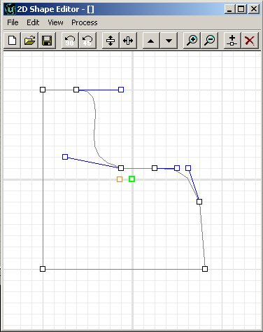
또 회전 버튼을 사용해서 이 도형을 회전시킬 수 있습니다. 그러나 회전이 적용되면 모든 bezier 가장자리는 직선 가장자리로 다시 변경된다는 점을 경고해 드립니다. 간단한 scale up/down 버튼을 사용하는 것 만으로도 브러시의 크기를 변경시킬 수 있습니다. 모든 변경은 크기를 2 배로 하거나 절반으로 만듭니다.
여러개의 동시 도형
Shape Editor 는 또한 동일한 영역에서 여러 도형을 지원합니다. 1 개의 브러시를 형성하는 2 개의 서로 다른 도형을 만드는 것은 아주 간단합니다. 그러나 원래 도형의 정점 중 1 개의 정점이라도 2 번째 도형의 정점과 겹칠 경우, 2 개의 도형을 적절히 분리하는 것은 불가능합니다. 즉, 여러 개의 정점이 한 지점에 있는 경우에 그들은 함께 움직입니다. Shape Editor 에 새로운 도형을 추가하려면, Edit>Insert New Shape 을 선택하면 또 다른 사각형이 기본 영역에 배치됩니다. 효율성을 위해 이 도형은 첫 번째 도형처럼 보이지만, 첫 번째 도형과 전혀 연결되지 않습니다.
그리드 크기 및 크기 조절
지금까지 모든 정점은 그리드에 맞추기 되어있습니다. 이것은 아주 정상적인 상태입니다. 이 그리드 설정은 편집기에서의 표준 그리드 설정을 변경하여 쉽게 변경될 수 있습니다. 이 설정은 그리드 스퀘어 당 1 에서 64 단위 사이로 설정될 수 있습니다. 그리드 크기가 확대되어 정점이 정확한 그리드 교차점에서 벗어난 경우 정점을 다음번에 움직일 때 그리드에 맞추어지게 됩니다.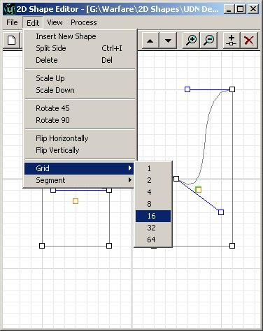
도형 저장 및 도형 재로드
도형을 만든 후 저장하여 나중에 동일한 맵 또는 전혀 맵에 다시 로드하여 편집할 수 있습니다. 또한 만들어진 브러시를 저장한 후 브러시는 저장할 파일에 전혀 영향을 받지 않습니다. 도형을 저장하고 로드하기위한 옵션은 도형의 재사용과 편의를 위해 제공됩니다. 도형은 2D Shape Editor 에서 만들어진 도형 고유의 .2ds 형식으로 저장됩니다.브러시 만들기
도형에서 브러시를 만들 준비가 되었으면 브러시를 만드는 방법에는 몇가지 옵션이 있습니다. 본 문서의 처음에 언급했듯이 여기에서 만들어진 도형은 빌드되는 브러시 면을 구성합니다. 어떤 면이 될 것인가는 브러시가 형성되는 방법에 따라 다릅니다. 이 때 몇 가지 옵션이 있습니다.시트 브러시 만들기
다른 옵션을 설명하기 위해 만들어진 마지막 도형을 모든 브러시 예제가 사용합니다. 이것은 실제 영역 포털 또는 다른 기타 항목에 사용되는 2 차원 브러시를 제작합니다. 물론, 브러시의 유일한 면으로 도형을 만듭니다. 시트 브러시를 만들려면 시트 버튼을 클릭하거나 Process>Sheet 를 선택하십시오. 도형에서 시트를 만들기 위해 선택할 때 1 개의 옵션만 나타납니다. 도형을 만드는 데 사용할 수있는 면(축)을 선택하고 OK 를 클릭하십시오.
도형에서 시트를 만들기 위해 선택할 때 1 개의 옵션만 나타납니다. 도형을 만드는 데 사용할 수있는 면(축)을 선택하고 OK 를 클릭하십시오.

회전 브러시 만들기
만든 도형을 선회 축으로 회전시켜 원형의 브러시를 만들 수 있습니다. 이것은 곡선 통로 또는 구부러진 파이프를 만들 때 매우 유용합니다. 도형을 회전시키려면 선회 지점(본 문서의 시작 부분에서 언급한 떠 있는 정점)을 도형의 왼쪽, 오른쪽, 위 또는 아래로 배치해야 합니다. 배치 위치는 도형을 회전시키는 방법에 따라 다릅니다. 논리적으로 생각하면 브러시를 만들기 위해 도형을 수평면에 대해 회전시키는 경우 선회 지점을 왼쪽이나 오른쪽으로 이동시키십시오.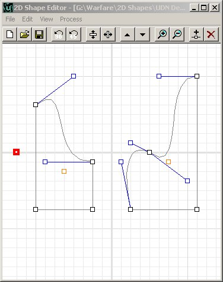
도형의 회전에 대한 옵션은 다음과 같습니다. Sides (측면 수): 이것은 만들어질 측면의 수입니다. Sides Per 360 (360 도 당 측면 수): 360 도 회전을 구성하는 총 측면 수입니다. Axis(축): 브러시를 만들기 위해 도형을 회전시키는 축입니다. 이 옵션에서 Sides Per 360 은 1 회전하는 데 필요한 단계 수를 설정할 수 있게 합니다. 따라서 회전 도형을 20 개의 측면(둥글고 부드러운 모양) 또는 6 개의 측면 (6 각형 모양의 브러시)으로 만들 수 있습니다. Sides (측면 수)는 실제로 만들어지는 측면의 수를 나타냅니다. Sides Per 360 을 20 으로 설정하고 Sides 를 10 으로 설정하면 반원의 브러시가 만들어집니다. Sides Per 360 을 48 로 설정하고 Sides 를 12 로 설정하면 아주 매끄러운 직각이 만들어집니다.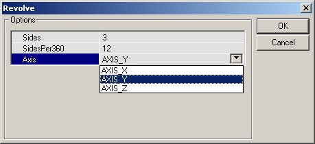
원하는 설정을 입력한 후 OK 를 클릭하면 도형에서 브러시가 만들어집니다. 아래 그림에서 브러시의 Sides Per 360 이 48, sides 가 16 으로 설정되고, 도형의 맨 왼쪽에 위치한 선회 주위로 Y 축을 중심으로 회전됩니다.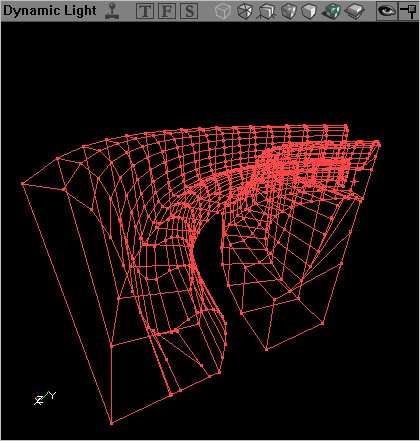
동일한 설정을 가진 동일한 도형의 회전이지만 선회 지점이 도형에 더 가깝게 이동하였습니다. 보시는 바와 같이 브러시의 각도는 더 예리하게 되어있습니다.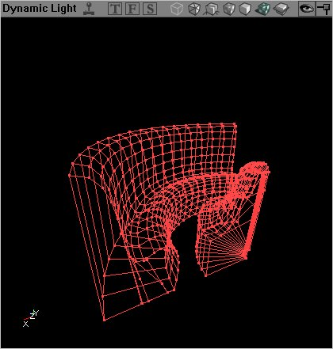
돌출 브러시 만들기
도형이 돌출될 수 있습니다. 즉, 동일한 도형이 브러시에서 만들어지지만 뒤로 3 차원을 형성하기 위해 직접 뒤로 돌출됩니다. 보시는 바와 같이 2 개의 옵션만이 제공됩니다. 첫 번째는 깊이 설정입니다. 이것은 편집기에서 브러시의 길이로 직접 변환됩니다. 따라서 256 으로 설정하면 깊이가 256 단위인 브러시를 만듭어집니다. 1024 로 설정하면 깊이가 1024 단위인 브러시가 만들어집니다. 여기에 브러시를 만들 축을 지정하는 축 옵션이 있습니다.
256 의 깊이 설정에 표준 축을 사용하면 다음과 같은 돌출 결과를 갖게 됩니다.
보시는 바와 같이 2 개의 옵션만이 제공됩니다. 첫 번째는 깊이 설정입니다. 이것은 편집기에서 브러시의 길이로 직접 변환됩니다. 따라서 256 으로 설정하면 깊이가 256 단위인 브러시를 만듭어집니다. 1024 로 설정하면 깊이가 1024 단위인 브러시가 만들어집니다. 여기에 브러시를 만들 축을 지정하는 축 옵션이 있습니다.
256 의 깊이 설정에 표준 축을 사용하면 다음과 같은 돌출 결과를 갖게 됩니다.
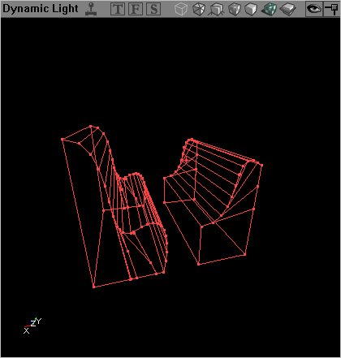
지점으로 돌출
Extrusion 방법과 마찬가지로 한 지점으로 돌출시키는 것은 2 차원 도형을 브러시를 브러시의 직접적인 면으로 사용하여 3 차원 브러시를 만들지만, 브러시를 한 지점으로 크기 조절시키다는 점에서 다릅니다. 사각형 도형을 돌출시키는 것은 피라미드 모양을 형성하게 되고 원을 돌출시키면 옥수수 모양이됩니다. 한 지점으로 돌출시키는데에는 깊이와 2 가지 옵션만이 있습니다. 일반 브러시 돌출에서 처럼 이러한 옵션은 편집기 단위의 브러시 깊이 및 돌출이 일어날 축으로 변환됩니다. 그러나 실제로 돌출이 발생하는 지점은 브러시의 중심이자, 2 차원 도형의 Pivot Point 이기도 합니다. 이는 즉, 브러시는(당연히) 그 뒤의 지점으로 돌출될 수 있지만 또한 옆으로도 돌출될 수 있습니다.
한 지점으로 돌출시키는데에는 깊이와 2 가지 옵션만이 있습니다. 일반 브러시 돌출에서 처럼 이러한 옵션은 편집기 단위의 브러시 깊이 및 돌출이 일어날 축으로 변환됩니다. 그러나 실제로 돌출이 발생하는 지점은 브러시의 중심이자, 2 차원 도형의 Pivot Point 이기도 합니다. 이는 즉, 브러시는(당연히) 그 뒤의 지점으로 돌출될 수 있지만 또한 옆으로도 돌출될 수 있습니다.
 도형 편집기에서 도형의 정확히 가운데에 선회축 지점을 직접 배치한 상태에서 한 지점으로 돌출시켜 일반적인 도형을 만들었습니다. 이렇게 하면 브러시가 뒤의 한 지점으로 뻗어있는 것처럼 보입니다.
도형 편집기에서 도형의 정확히 가운데에 선회축 지점을 직접 배치한 상태에서 한 지점으로 돌출시켜 일반적인 도형을 만들었습니다. 이렇게 하면 브러시가 뒤의 한 지점으로 뻗어있는 것처럼 보입니다.
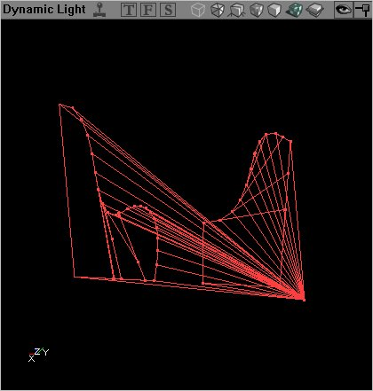
이 돌출은 깊이와 축에 대해 동일한 설정을 갖지만 선회축 지점이 도형의 아주 아래 및 측면에 배치되었습니다. 이 결과를 여기 저기로 이동시키면 3D 뷰포트는 이해하기 쉽습니다만 이 스크린샷을 보면 선회축 지점이 돌출에 미치는 영향을 잘 이해할 수 있을 것입니다.경사로 돌출시키기
도형을 경사로 돌출시키면 한 지점으로 돌출시킨 것과 유사한 브러시를 갖게되는 결과를 유발하지만 지점에 도달하기 전에 돌출이 멈춥니다. 이러한 브러시 만들기에 대한 옵션은 CapHeight 입니다. 이것은 만들어진 브러시의 깊이와 관련됩니다. 깊이는 브러시가 자라기 시작(한 지점으로 돌출시키는 것과 동일하게)하는 상상의 지점입니다. Axis (축)은 브러시가 돌출되는 것입니다.
CapHeight 의 오해하기 쉬운 버그가 Epic 에 보고 되고 있다는 점에 유의하십시오. 일반적으로 CapHeight 는 브러시가 잘리는 양을 정하지만 최소한 빌드 829 에서는 브러시의 실제 깊이를 보여주고 있다는 점에 유의하십시오.
256 의 깊이(즉, 브러시 전면에서 256 단위 뒤로 내려간 지점) 및 192 로 CapHeight? 를 지정하면(브러시는 실제로 192 단위입니다), 면취 된 돌출에서 만들어진 브러시는 아래 그림과 같이 됩니다.
이러한 브러시 만들기에 대한 옵션은 CapHeight 입니다. 이것은 만들어진 브러시의 깊이와 관련됩니다. 깊이는 브러시가 자라기 시작(한 지점으로 돌출시키는 것과 동일하게)하는 상상의 지점입니다. Axis (축)은 브러시가 돌출되는 것입니다.
CapHeight 의 오해하기 쉬운 버그가 Epic 에 보고 되고 있다는 점에 유의하십시오. 일반적으로 CapHeight 는 브러시가 잘리는 양을 정하지만 최소한 빌드 829 에서는 브러시의 실제 깊이를 보여주고 있다는 점에 유의하십시오.
256 의 깊이(즉, 브러시 전면에서 256 단위 뒤로 내려간 지점) 및 192 로 CapHeight? 를 지정하면(브러시는 실제로 192 단위입니다), 면취 된 돌출에서 만들어진 브러시는 아래 그림과 같이 됩니다.
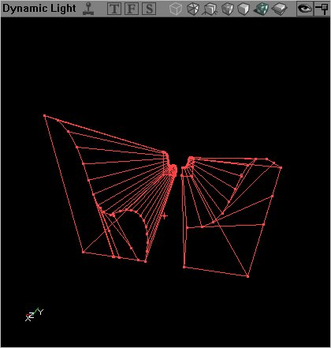